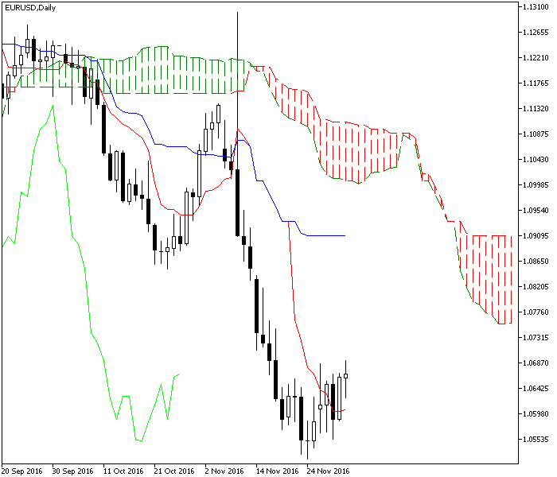

<!DOCTYPE html>
<html>
</html>
<head>
  <meta charset="utf-8">
  <meta http-equiv="X-UA-Compatible" content="IE=edge">
  <title>外汇站（fx-z.com） - 一目平衡指标</title>
  <meta name="description" content="">
  <meta name="viewport" content="width=device-width, initial-scale=1">
  <meta name="robots" content="all,follow">
  <!-- Bootstrap CSS-->
  <link rel="stylesheet" href="vendor/bootstrap/css/bootstrap.min.css">
  <!-- Font Awesome CSS-->
  <link rel="stylesheet" href="vendor/font-awesome/css/font-awesome.min.css">
  <!-- Google fonts - Roboto-->
  <link rel="stylesheet" href="https://fonts.googleapis.com/css?family=Roboto:400,300,700,400italic">
  <!-- owl carousel-->
  <link rel="stylesheet" href="vendor/owl.carousel/assets/owl.carousel.css">
  <link rel="stylesheet" href="vendor/owl.carousel/assets/owl.theme.default.css">
  <!-- theme stylesheet-->
  <link rel="stylesheet" href="css/style.default.css" id="theme-stylesheet">
  <!-- Custom stylesheet - for your changes-->
  <link rel="stylesheet" href="css/custom.css">
  <!-- Favicon-->
  <link rel="shortcut icon" href="img/favicon.png">
  <!-- Tweaks for older IEs--><!--[if lt IE 9]>
    <script src="https://oss.maxcdn.com/html5shiv/3.7.3/html5shiv.min.js"></script>
    <script src="https://oss.maxcdn.com/respond/1.4.2/respond.min.js"></script><![endif]-->
</head>
<body>
  <div id="all">
    <div class="container-fluid">
      <div class="row row-offcanvas row-offcanvas-left"> 
        <!--   *** SIDEBAR ***-->
        <div id="sidebar" class="col-md-4 col-lg-3 sidebar-offcanvas">
          <div class="sidebar-content">
            <h1 class="sidebar-heading"> <a href="https://fx-z.com">fx-z.com</a></h1>
            <p class="sidebar-p">介绍外汇相关的基本知识，告诉您如何进行自己的技术面和基本面分析，讲解先进的交易理念，并且为您阐述失败交易者与专业交易者之间的真正区别。 </p>
            <p class="sidebar-p">通过这些课程的学习，您将学会如何根据自己的优势来应用情绪分析，还将了解真实世界的事件会对货币汇率产生什么影响，央行在外汇市场中所发挥的作用，以及交易者在颇受欢迎的即期外汇交易中有哪些选择方案。 </p>
            <ul class="sidebar-menu">
                <!-- Link-->
                <li class="sidebar-item"><a href="https://fx-z.com" class="sidebar-link">首页</a></li>
                <!-- Link-->
                <li class="sidebar-item"><a href="cihui.html" class="sidebar-link">外汇词汇</a></li>
                <!-- Link-->
                <li class="sidebar-item"><a href="ebook.html" class="sidebar-link">获取外汇电子书</a></li>
            </ul>
            <p class="social"><a href="https://www.forextimechina.com.cn/zh?form=IZIN" target="_blank"data-animate-hover="pulse" class="external facebook"><i class="fa fa-eur"></i></a><a href="https://www.forextimechina.com.cn/zh?form=IZIN" target="_blank" data-animate-hover="pulse" class="external gplus"><i class="fa fa-gbp"></i></a><a href="https://www.forextimechina.com.cn/zh?form=IZIN" target="_blank" data-animate-hover="pulse" class="external twitter"><i class="fa fa-rmb"></i></a><a href="https://www.forextimechina.com.cn/zh?form=IZIN" target="_blank" title="" class="external instagram"><i class="fa fa-dollar"></i></a><a href="https://www.forextimechina.com.cn/zh?form=IZIN" target="_blank" data-animate-hover="pulse" class="email"><i class="fa fa-money"></i></a></p>
            <div class="copyright text-center text-md-left">
             
              
            </div>
          </div>
        </div>
        <!--   *** SIDEBAR END ***  -->
        <!--   *** DETAIL ***-->
        <div class="col-md-8 col-lg-9 content-column white-background">
          <div class="small-navbar d-flex d-md-none">
            <button type="button" data-toggle="offcanvas" class="btn btn-outline-primary"> <i class="fa fa-align-left mr-2"></i>菜单</button>
            <h1 class="small-navbar-heading"> <a href="https://fx-z.com/8-12.html">下一篇 </a></h1>
          </div>
          <div class="row">
            <div class="col-xl-10">
              <div class="content-column-content">
                <h1>一目平衡指标</h1>
     <p>
    Ichimoku Kinko Hyo 是一个日语词组，意思是“一目平衡图表”。它是一种通过移动平均线来显示当前市场情况平衡状态的独特技术；这些市场情况包括支撑位、阻力位和潜在动量。“一目”是此处的重要词汇，是指凭借一条通用的特制移动平均线，可概括您图标上的价格动向。计算移动平均线的目的是衡量支撑位和阻力位的区域，以及将当前价格置于过去、当前和未来趋势的背景下。虽然我们经常依赖于扩展支撑线、阻力线和通道，而且将预测能力归因于标准动量指标（以及江恩扇形线），但 Ichimoku 是涵盖预测能力的为数不多的几个指标之一。
</p>
<p>
    最好是确认一个可靠的翻译，或者至少有几个能为我们带来直观理解的词语。在未经清晰阐明的情况下，Ichimoku 带有一丝神秘或神奇的色彩。请勿迷信这种神秘之处。与所有指标一样，Ichimoku 是一种基于计算，特别是历史数据计算的指标。独创的计算方法以及起初看上去较为奇怪的图表无法否定，与所有其他指标一样，Ichimoku 只是另一套基于历史数据的指标。至于将指标扩展至未来，我们已经通过一些指标操作过许多次；这些指标包括三角形态、通道、支撑线和阻力线等
</p>
<p>
    话虽如此，外汇界争相支持 Ichimoku 指标，因为它确实有效，而且能够让您一目了然地判断包含矛盾信号在内的图表世界。您的八个或十个指标中，可能有一半显示买入，而另一半显示卖出。Ichimoku 是一个颇受欢迎的决胜指标。此外，它的计算方法是取过去 X 天最高点和最低点的平均值。在外汇等市场，交易几乎全天 24 小时进行，仅开盘价和收盘价具有任意性，因此这种中点是适当、有用的。
</p>
<p>
    而且最重要的是，我们发现 Ichimoku 指标的准确率高于 75%（见下文）。其他指标均无法做到这一点。因此，学习外语词汇以及一种全新的在图表上显示指标的方式变得非常有价值。许多 Ichimoku 支持者将它称为一种独立的交易系统，这也是发明者的目的。虽然一些分析师认为这是夸大其词——首先，对于交易信号目的，它在趋势市场中最有效，但在区间震荡交易市场（其所有指标均基于移动平均线）的用处更小。
</p>
<p>
    此外，Ichimoku 的目的是用于每日图。因为它最重要的因素是收盘价。它概括了当天的主要情绪。但在交易前几个小时内，240 分钟图表上可能会出现十字星（开盘价与收盘价相同），因此您可能真的在查看错误的蜡烛图解读。这并不是说 Ichimoku 不能或不应该用于短于一整天的图表，它只是发出警告：请勿用错地方。
</p>
<p>
    Ichimoku 图表的目标由日本记者 Goichi Hosoda 于 20 世纪 30 年代末制定，但直至 1969 年才公开发布，虽然它最初仅面向日本市场。Hosoda 的笔名为“一目山人”，意即“立于山巅，对一切一目了然的人”。
</p>
<p>
    英文和其他西语书籍对这种方法的介绍始于 20 世纪 90 年代后期。如果您查看亚马逊上关于 Ichimoku 和外汇的书籍列表，您只能找到 100 本左右，而且其中大部分发表于前几年。鉴于技术分析类书目已超过 18,000 本，Ichimoku 只能算一个初来乍到者。
</p>
<p>
    <strong>Ichimoku 基础知识</strong>
</p>
<p>
    一目平衡指标似乎是一个复杂的系统，但归根结底，它的基础知识是简单而熟悉的。其实质是利用具体的移动平均线计算与显示方法，以获得对价格动向的全面了解。标准移动平均线以及仅一两条平均线无法让您做到这一点——您需要更复杂的版本以及更新奇的显示方法。令人好奇的是，Ichimoku 移动平均线数字 9 和 26 与 Gerald Appel 在 MACD 方法中独立设计的一样。
</p>
<p>
    请注意，虽然 Ichimoku 图表总是使用蜡烛线来显示线条，但它原本并非传统蜡烛图分析的一部分。尽管如此，Ichimoku 并非呆板的信号系统。它有充足的解读空间，而且其中一种丰富的解读资料源来自蜡烛图分析。使用 Ichimoku 无需学习蜡烛图，但如果您学习几种最典型的蜡烛图形态，这对您更加有利。
</p>
<p>
    技术分析的主要目标是确定趋势是否存在（以及趋势的方向），以及趋势何时逆转。这两者都能通过 Ichimoku 分析找到答案。
</p>
<p>
    Ichimoku 采用五条曲线。有两条线连接“span”（跨度）边线或用于确定支撑、阻力区域的云形。通常，支撑位和阻力位的表示方法为单个数字，以及连接高点、低点的手绘对角斜线，或者由历史高低点或枢轴点组成的水平线。 Ichimoku 提供第三种版本——用一种更灵活的方式表示阻力和支撑区。这种“云”由两条移动平均线组成，而且始终用两种颜色填充，使之更具视觉冲击力。
</p>
<p>
    Tenkan-Sen（信号线）的计算方式为取前 9 个时段的最高价，加上同时段最低价，然后除以 2。请注意，这不是指前 9 天的平均中点。如果 Tenkan-Sen 上升或下行，说明有趋势出现。如果 Tankan-Sen 保持水平方向，说明不是趋势，而是区间震荡交易。它通常用红线表示。
</p>
<p>
    因此，Tenkan 给出了两条有用的信息：趋势和大致支撑/阻力位。
</p>
<p>
    Kijun-Sen（基准线）的计算方式相同，但取值时段更长，为 26 天，具体为：用 26 天最高价加上最低价，然后除以 2.Kijun-Sen 也是一个趋势指标并且显示支撑/阻力位，但它还有第三项功能，即预测未来的价格走向。如果当前价格高于 Kijun-Sen 线，我们预计价格将继续走高。Kijun-Sen 线通常用蓝线表示。Kijun-Sen 的一项应用是用它来定义追踪止损。
</p>
<p>
    <strong>Kumo（云）</strong>
</p>
<p>
    Kumo 或云由下文中另外两个指标之间的颜色填充部分形成。云的边界线为当前、将来的支撑线及阻力线。宽云表示所含时间段内出现较大的价格变化，而窄云意味着更容易断裂的支撑位或阻力位。宽云让您相信价格将不会突破支撑位或阻力位。窄云意味着价格可能会突破支撑位或阻力位，而且这正是传统蜡烛图分析派上用场的时候——通过检查蜡烛线是否突破且进入云内，您可以查看这些蜡烛线是延续原走势还是逆转走势。射击之星等逆转蜡烛线将提醒您，走势即将结束。
</p>
<p>
    云或 Kumo 通过计算两种被称为“Span”(跨度)的指标而形成。由于 Senkou 其实是曲线，在此处用跨度这个词并不正确，而且它将云绘制在图表上以及“span”之间的填色空间。
</p>
<p>
    Senkou Span A 是指图表上形成最远期点数的“先行”跨度。它的计算方式为，Tankan-Sen 线加上 Kijun-Sen 线，然后除以 2，并且绘制在未来的第 26 个时段。如果您的价格高于最上方的跨度线，即 Kumo 或云的顶端，那么跨度线将成为支撑位。
</p>
<p>
    Senkou Span B 是一种长期指标，也被成为先行跨度。它的计算方式为，用过去 52 个时段的最高价加上最低价，然后除以 2，并且绘制在未来的第 26 个时段。
</p>
<p>
    合乎逻辑的是，当短期跨度 Span A 高于 Senkou Span B，说明价格形成上升趋势。当 Span B 低于 Span A 时，反之亦然。多头转空头的过程被称为 Kumo 扭转；与移动平均线交汇点相似，该过程可用于预测走向的变化。
</p>
<p>
    现在，Ichimoku 正变得有些捉摸不定。针对由上述跨度形成的云，我们将添加另一个指标：Chikou span（延迟线）。
</p>
<p>
    Chikou 线将现在的价格绘制在 26 天前。这似乎很不明智，但是出现交叉时，这样的滞后指标仍具有强大的预测价值。不过，与任何移动平均线一样，Chikou 线与当前价或跨度交叉，或者与两者同时交叉时，这代表着走向改变的信号。在外汇中，Chikou 线正确预测下一时段价格走向的频率高达近 75%。Chikou 通常用绿线表示。
</p>
<p>
    云和 Chikou 线让您对市场情况一目了然。如果 Chikou 线高于价格线，则市场情绪依然看多。但如果 Chikou 下穿价格线，则意味着当前价格低于过去 26 个时段的价格。您可以“一目了然”地发现市场情绪正在转向。
</p>
<p>
     上一个收盘价高于 Chikou 线，但远远未达到云阻力区。
</p>
<p>
    <strong>如何使用 Ichimoku</strong>
</p>
<p>
    显而易见的是，当价格在云之上时，这是上升趋势；当价格在云之下时，这是下跌趋势。当价格在云内时，您应该按照上文所述，回到蜡烛图分析。
</p>
<p>
    其次，云的宽度是可以用来衡量趋势稳健性的指标。宽云让您感到放心：您判断的趋势方向是正确的。而且，显示方法不可能被误读，因为支撑云与阻力云的颜色完全不同。通常，支撑云为绿色（“走”），阻力云为红色（“停”），但无论您的图表软件使用哪种颜色，您始终能一目了然地分辨它们。因此，当云的颜色发生变化时，您可以确定趋势方向也将变化。
</p>
<p>
    Chikou 线将当前价绘制在 26 天前；如果这条线在云之上且高于今日蜡烛线，则代表着看涨信号。实际上，您只需注意 Chikou 线的方向和斜率；它们预测了下一次价格动向。这种方法在外汇中非常有效。
</p>
<p>
    <strong>其他应用</strong>
</p>
<p>
    有些分析师非常深入，以致于将云定义为包括艾略特波浪理论在内的预示形态，而且利用波浪大小来确定价格目标。在《Ichimoku 图表》一书中，Nicole Elliott 描述了如何通过 Ichimoku 来获得预测下一个转折点的时间跨度原则；该转折点在日语中被称为 “kihon suchi”。该过程需要进行大量的主观判断。
</p>
<p>
    <br/>
</p>
<p>
    <br/>
</p>
              </div>
            </div>
          </div>
        </div>
      </div>
    </div>
  </div>
  <!-- JavaScript files-->
  <script src="vendor/jquery/jquery.min.js"></script>
  <script src="vendor/popper.js/umd/popper.min.js"> </script>
  <script src="vendor/bootstrap/js/bootstrap.min.js"></script>
  <script src="vendor/jquery.cookie/jquery.cookie.js"> </script>
  <script src="vendor/owl.carousel/owl.carousel.min.js"></script>
  <script src="vendor/masonry-layout/masonry.pkgd.min.js"></script>
  <script src="js/front.js"></script>
</body>